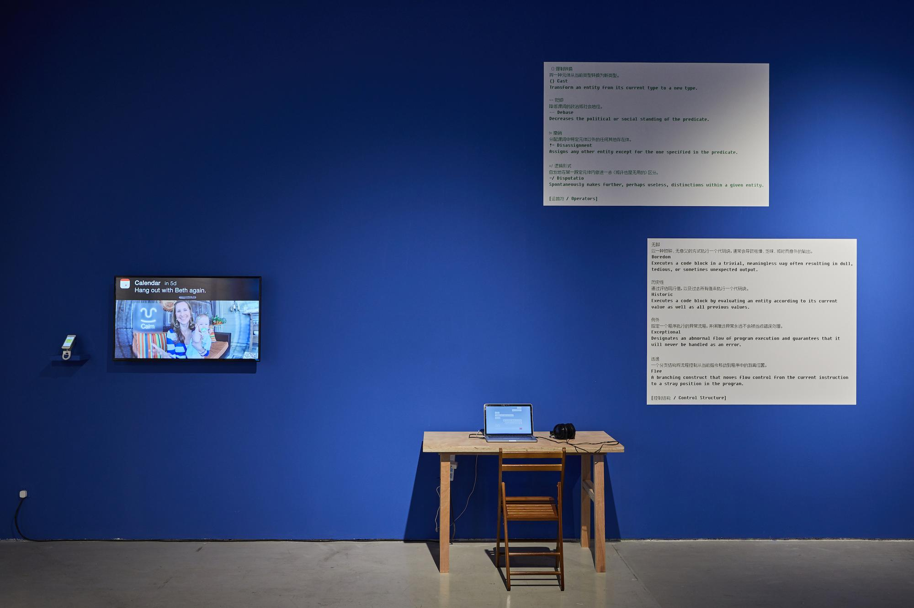
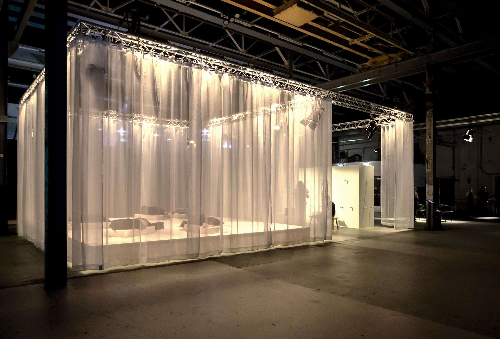

Her projects explores the relationship between people with the help of technology.

Some works tend to humanize the roles of smart devices. In this project, visitors had 24-hour access and control of McCarthy's home.

Visitors can lie down and interact with "smart" pillows, like having conversations or playing music.
"Each work feels like an attempt to hack my way out of myself and into closeness with others. I am embodying machines, trying to understand that distance between the algorithm and myself, the distance between others and me."